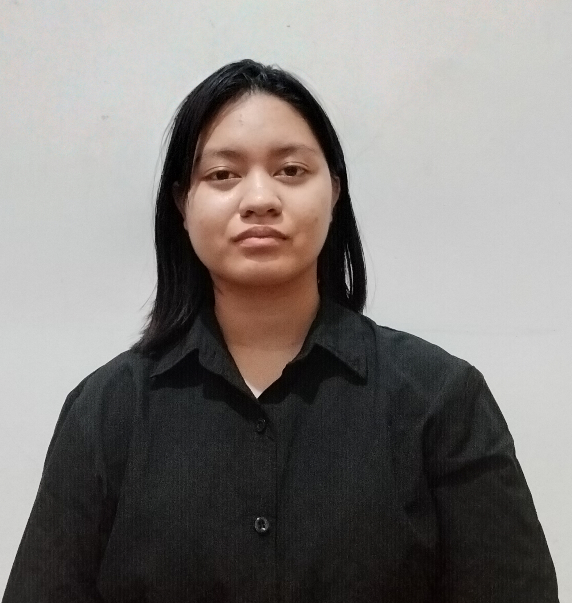

Unah Alexandria Alvarez
Aspiring Ui/Ux Designer | Web Developer
Summary
A soon to be Multimedia graduate that wishes to pursue her dreams of becoming a designer.
Currently, she is immersing herself in school clubs, competitions, and courses in order to deepen her skills.
Education
Academic Excellence Awardee,
Outsanding member of Multimedia Arts Club
- School: University of San Agustin
- Location: General Luna St. Iloilo
- Course: Humanities and Social Sciences
Experiences
Skills
- Creativity ★★★★☆
- Attention to Detail ★★★☆☆
- Adaptability ★★★★★
Achievements
- Editorial Cartooning - Digital Art
- Second Place, January 18, 2025
- Digital Poster Making - Buwan ng Wika
- Second Place, August 2022
Others